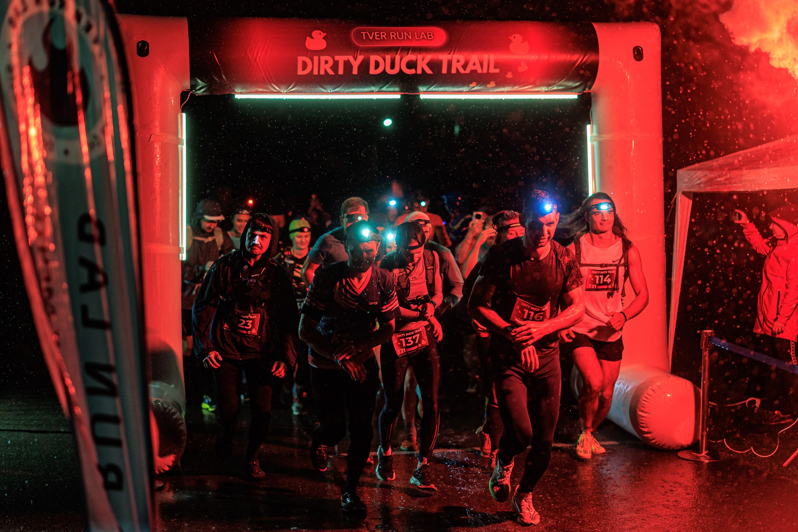
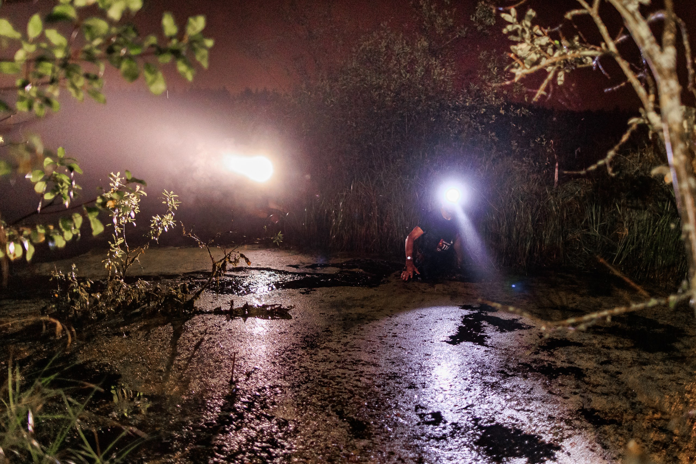
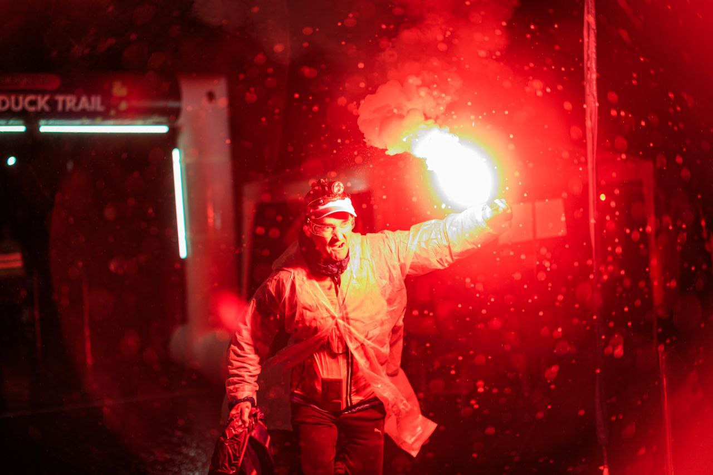
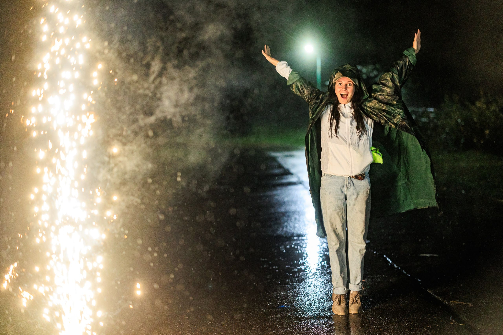
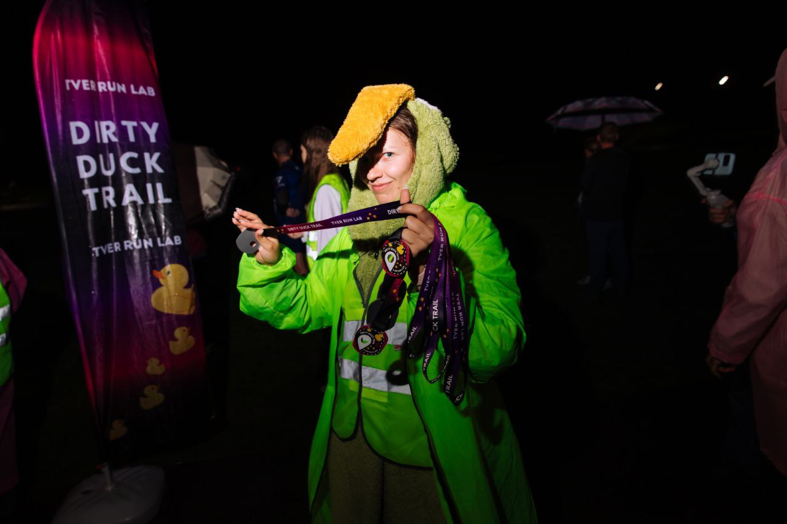

TRAIL RUNNING
DIRTY DUCK TRAIL
Настоящий трейл через лес, грязь, болота и приключения.
📅
15 августа 2026
Дата старта
📍
Чуприяновка
Тверская область
🌙
Ночной трейл
Грязь • Лес • Болота
🏁 Гонка завершена!
Спасибо за участие!
DIRTY DUCK TRAIL
Самый грязный трейл Тверской области
Dirty Duck Trail — это не просто забег. Это настоящий ночной трейл по лесным тропам, болотам, ручьям и грязи, который закалит ваш характер.
- 🌲 Лесные тропы
- 🦆 Болота и грязь
- 💧 Броды и ручьи
- 🏃 Атмосфера настоящего трейла
Выбери свою дистанцию
21 км
Храбрый утёнок
- 🔴 Основная дистанция
- 💪 Максимум грязи и эмоций
- Влажность 💧💧💧💧💧
Моменты Dirty Duck Trail





РЕГИСТРАЦИЯ
Зарегистрироваться на Orgeo
Готов испытать себя?
Регистрация участников проходит на платформе Orgeo. Там же опубликованы положение, стартовые списки и результаты соревнований.
🏅 Памятная медаль финишерам
📷 Топовые фотографии
🍲 Горячее питание на финише
🌙 Ночной атмосферный трейл
После регистрации не забудьте проверить свои данные в стартовом протоколе.